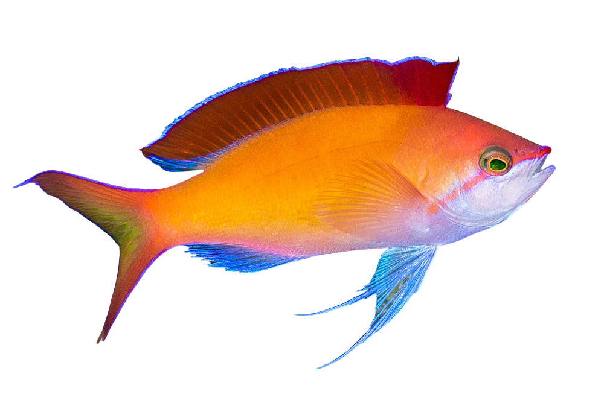

Dispar Anthias

Common Name: Redfin Anthias, Peach Anthias, and Madder Seaperch
Scientific Name: Pseudanthias dispar
Adult Size: 3-4 inches
Habitat: western Pacific Ocean and Indo-Pacific coral reefs
Behavior: peaceful but can be aggressive towards each other
Lifespan: 5-8 years
Diet: Shrimp
Reproduction: Release their eggs and sperm into the open water column
Cool Facts: Ability to change sex
Other Names: Orange Anthias or Peach Fairy Basslet